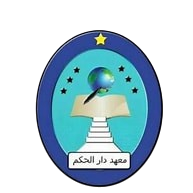

Ponpes Daar El-Hikam
Membentuk Generasi Qur'ani, Berakhlak Karimah, Unggul, dan Berwawasan Modern
Selamat Datang
Selamat datang di Layanan Informasi Terpadu Pondok Pesantren Daar El-Hikam. Silakan klik tombol di bawah ini untuk menuju ke halaman pencatatan data operasional pondok.
Visi & Misi
Visi
"Mewujudkan generasi unggul yang beriman, berilmu, berkarakter, dan berdaya saing global."
Misi
- Mengembangkan lingkungan belajar yang religius dan berakhlak mulia untuk membentuk karakter siswa yang berbasis nilai-nilai moral dan spiritual.
- Meningkatkan mutu pendidikan melalui inovasi pembelajaran berbasis teknologi dan pendekatan yang berpusat pada siswa.
- Meningkatkan mutu pendidikan melalui inovasi pembelajaran berbasis teknologi dan pendekatan yang berpusat pada siswa.
- Menumbuhkan jiwa kepemimpinan dan kemandirian siswa melalui kegiatan ekstrakurikuler dan pembinaan minat bakat.
- Mendorong prestasi akademik dan non-akademik siswa hingga tingkat nasional dan internasional.
- Mewujudkan sekolah yang ramah lingkungan melalui program cinta lingkungan dan kesadaran ekologis.
- Memperkuat hubungan antara sekolah, keluarga, dan masyarakat dalam mendukung pengembangan potensi siswa secara optimal.
Panca Jiwa Pondok
Lima nilai dasar dasar yang melandasi tata kehidupan dan seluruh jiwa santri di dalam pondok:
- 1. Keikhlasan
Segala amalan, baik kiai mendidik maupun santri belajar, semata-mata mengharapkan ridha Allah SWT tanpa pamrih duniawi.
- 2. Kesederhanaan
Bukan berarti miskin, melainkan pola hidup yang wajar, tabah, dan penuh kecukupan mental dalam menghadapi perjuangan hidup.
- 3. Kemandirian (Berdikari)
Kesanggupan menolong diri sendiri, mendidik kekuatan mental, dan menjadi modal utama dalam hidup bermasyarakat.
- 4. Ukhuwah Islamiyah
Jalinan persaudaraan antar-santri yang kokoh, harmonis, melatih kebersamaan tanpa sekat suku dan golongan.
- 5. Kebebasan
Bebas berpikir dan berbuat dalam garis positif, kreatif, serta bertanggung jawab di bawah bimbingan dan petunjuk Ilahi.
Motto Pondok
Empat pilar kualifikasi utama yang wajib dicapai oleh setiap alumni santri:
- 1. Berbudi Tinggi
Memiliki landasan adab dan akhlakul karimah yang utama dalam bertindak.
- 2. Berbadan Sehat
Fisik yang kuat dan sehat untuk menunjang kelancaran ibadah serta proses menuntut ilmu.
- 3. Berpengetahuan Luas
Menguasai khazanah keislaman (tafaqquh fidding) sekaligus wawasan sains modern secara seimbang.
- 4. Berpikiran Bebas
Matang, bijaksana, objektif, dan tidak mudah terombang-ambing oleh pengaruh buruk zaman.